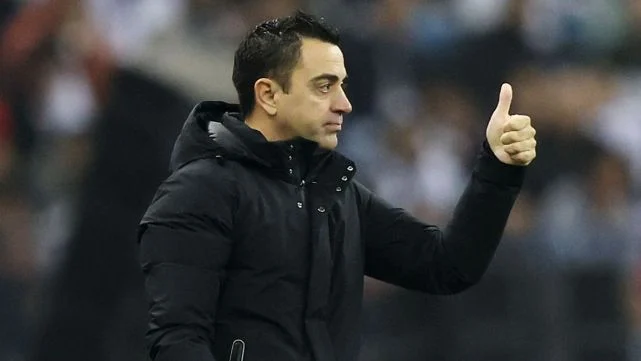
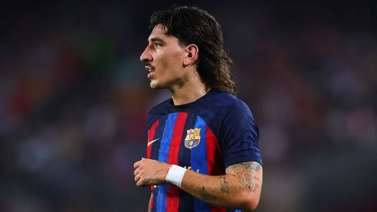
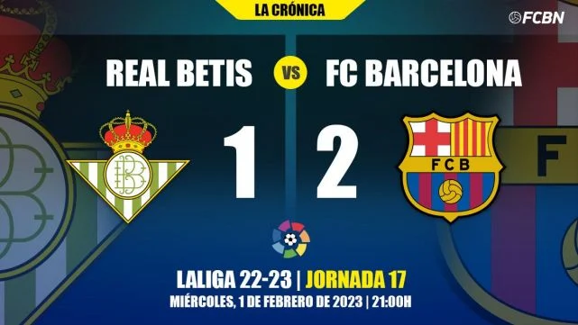
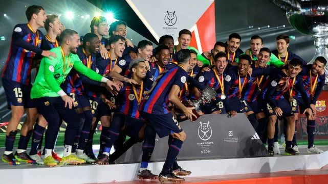

Pavard, Amrabat... Los 'tapados' del Barça para lo que resta de mercado
El Barça está a contrarreloj para cerrar algunas incorporaciones de cara a lo que resta de campaña. Estos son los nombres de algunos de los futbolistas vinculados con el club. Tanto Joan Laporta como el propio Xavi Hernández se mostraron muy reacios a la posibilidad de que el FC Barcelona hiciera algún movimiento durante el mercado de invierno debido a las limitaciones de LaLiga.
Héctor Bellerín, a un paso del Sporting de Lisboa
A falta de un comunicado oficial, todos los indicios apuntan a que Héctor Bellerín dejará de ser jugador del FC Barcelona antes del cierre del mercado de invierno. El canterano se unirá a la disciplina del Sporting de Lisboa tras solo seis meses en el club en sustitución de Pedro Porro, quien partió con dirección al Tottenham Hotspur y dejó abierta una vacante.A sus 27 años, aterrizó en el Spotify Camp Nou a coste cero después de rescindir su contrato con el Arsenal de Mikel Arteta.
El Barça logra una sufrida victoria ante el Betis y es aún más líder (1-2)
El FC Barcelona logró una victoria importantísima sobre el Betis en el Benito Villamarín (1-2) gracias a los goles de Raphinha y Robert Lewandowski. Los de Xavi Hernández son aún más líderes de la Liga Española de Fútbol, con ocho puntos de ventaja sobre el Real Madrid al término de la primera vuelta, a pesar de sufrir en el tramo final por un infortunado gol en contra de Jules Koundé cuando todo parecía resuelto. Los de Manuel Pellegrini, fieles a su costumbre, lucharon hasta el final.
El Barça, infravalorado pese a tener números a la altura de los mejores de Europa
A nivel doméstico, el Barça está siendo de los tres mejores equipos de toda Europa y los números así lo respaldan. Sin embargo, son pocos los que de verdad le entregan el crédito merecido al club azulgrana. Si se realizara una encuesta a los seguidores del fútbol europeo sobre qué equipo ha sido el mejor hasta ahora en la temporada seguro que dos de los equipos que saldrían más votados serían el Arsenal y el Nápoles.